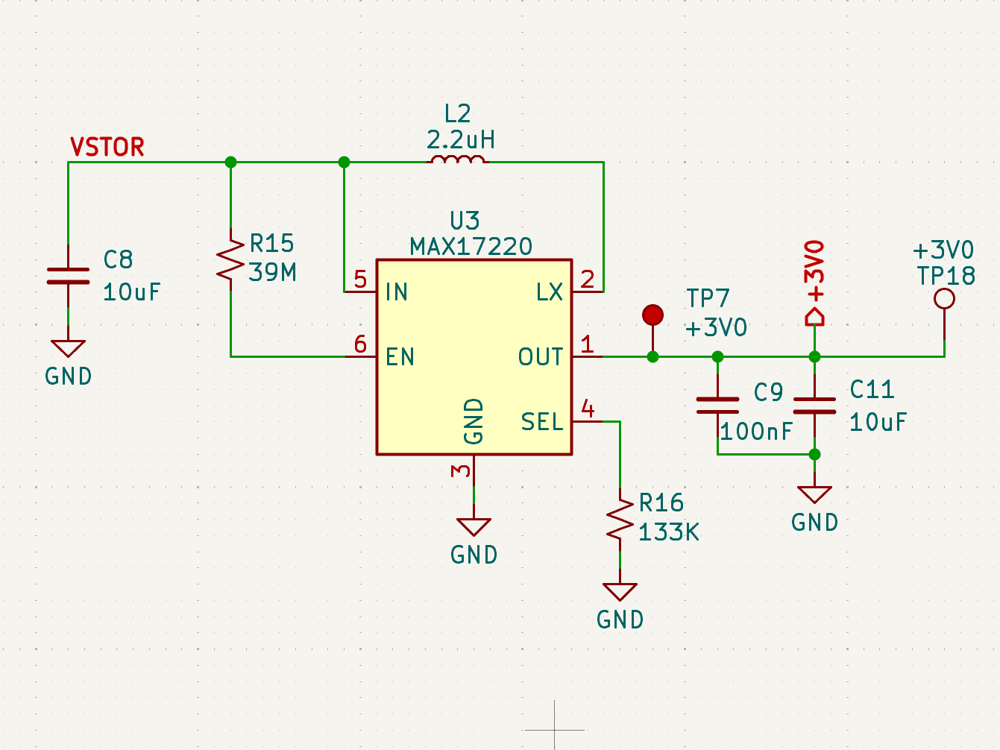
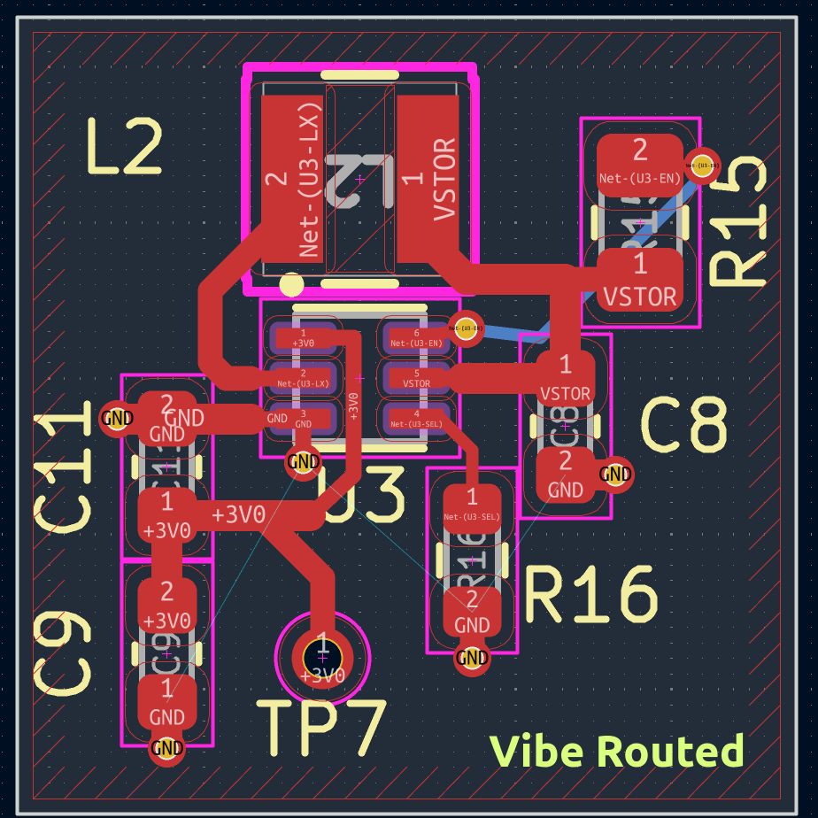
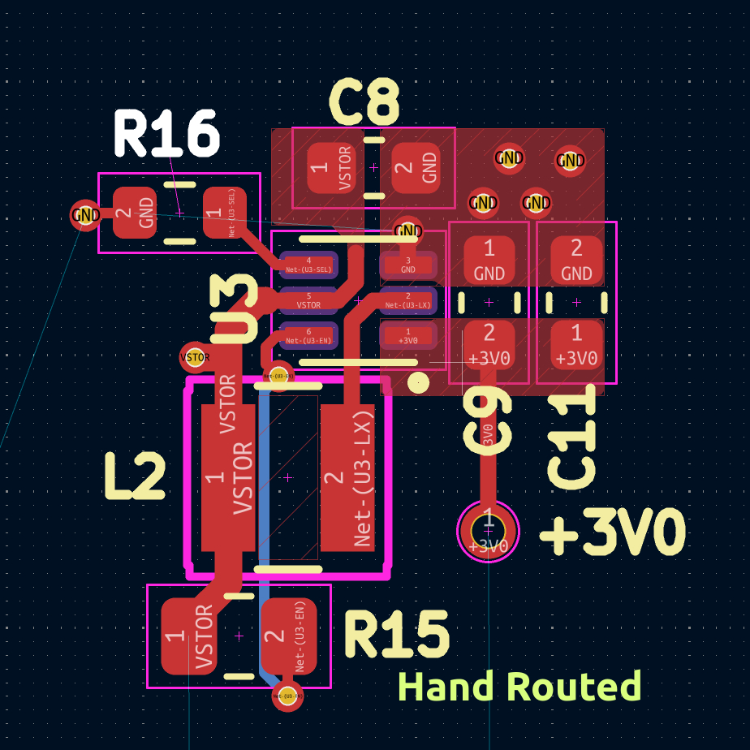
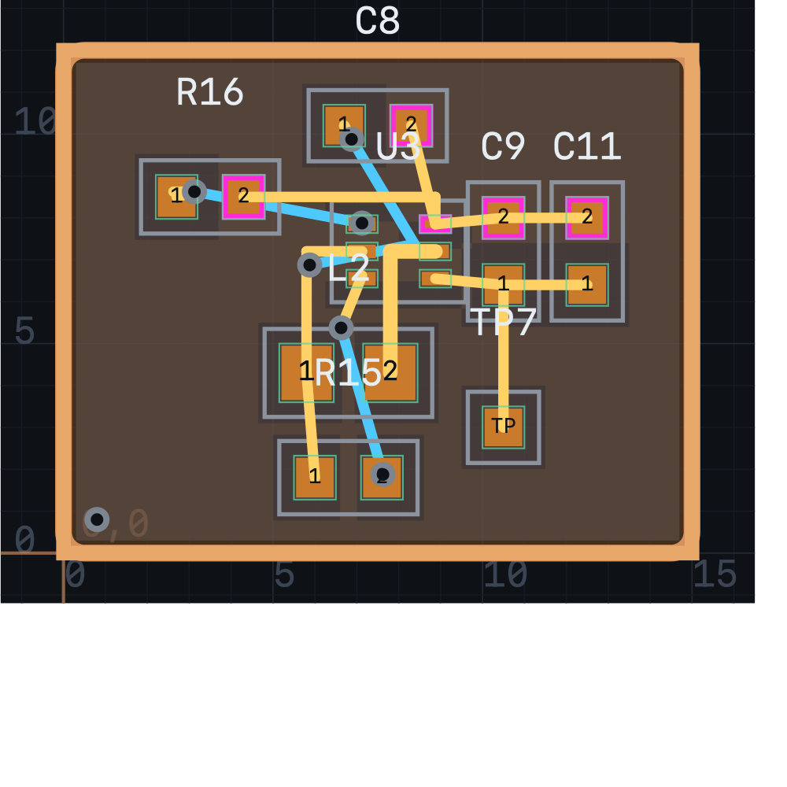
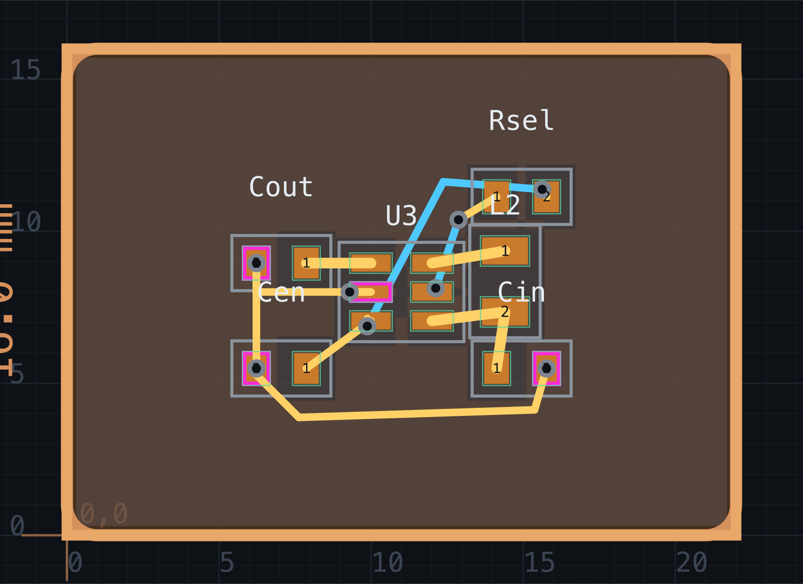

Hardware engineering is currently experiencing a wave of "vibe coding" hype. Several tools claim you can drop a netlist into an LLM or black-box cloud service and get back a production-ready PCB without touching placement or routing.
Earlier today, hardware engineer Alperen Akkuncu posted a benchmark on X (@AlperenAkkuncu) comparing a hand-routed boost converter against Astra (an AI autorouter). His review was candid:
"First off, I would never accept this vibe routed layout, the output capacitor placement is not good, it's very far apart from the GND and OUT pin of the converter which is very important for boost converters... What makes it unusable for me? It's so difficult to make incremental changes, everything takes lot of time. For instance, I tried to add the test point later and asked Astra to route it for me quickly, it took it 4 minutes which can take seconds."
We decided to put Fragua against this exact test case to dissect why generic AI placers fail on switching converters, and how a deterministic local engine paired with agent steering solves it.
The Circuit: MAX17220 Solar Boost Converter
The test circuit is a micropower boost converter based on Maxim's MAX17220 (+3V0 output) used in a solar harvesting island on a compact 15 × 12 mm board:
- U3: MAX17220 in a 6-pin µDFN package (2 × 2 mm, 0.65 mm pitch).
- L2: 2.2 µH power inductor (0805 footprint).
- C8: 10 µF input capacitor (VSTOR to GND).
- C9 & C11: 100 nF high-frequency bypass + 10 µF bulk output capacitors (+3V0 to GND).
- R15 & R16: 39 MΩ enable pull-up and 133 kΩ voltage select resistor.
- TP7: +3V0 testpoint pad.
- Rules: Standard 2-layer JLCPCB floor (0.127 mm trace / space, 0.3 mm drill).





The Physics: Why Switching Regulators Punish Bad Geometry
In digital design, autorouters can treat nets largely as topological graphs. In switching power converters, geometry is electrical behavior.
During every switching cycle of a synchronous boost converter, current flows through the inductor and the low-side switch to ground. When the switch turns off, current commutates almost instantaneously through the high-side rectifier into the output capacitor (Cout) and returns to the IC's GND pin.
This loop experiences high di / dt transient current:
V_spike = L_loop · (di / dt)
A typical surface PCB trace exhibits approximately 1 nH of parasitic inductance per millimeter.
- In Astra's layout: C9 and C11 were placed on the far opposite side of the chip. The +3V0 rail and GND return travel over 6 mm across the board. That ~10–12 nH of loop inductance creates ringing, excessive switch-node voltage overshoot, and radiates EMI across the entire board.
- In the Hand layout: The engineer oriented C9 and C11 vertically right next to pins 1 (OUT) and 3 (GND). Total loop trace length is under 1.5 mm.
Experiment 1: Pure auto (U3 anchor only)
After the island-seating and stitch fixes on master, the honest agent flow is: pin the converter, then let product verbs do the rest — no hand trace, no moving passives after auto-place.
place U3 11 8 auto-place seed=42 route max_seconds=180 auto-pour stitch
On the bench/boost-max17220 script (22 × 16 mm, SOT23-6, density N courtyards, JLCPCB-2L):
- Routed: 6/6 nets in ~195 ms (plus place/pour/stitch).
- LX: 0 vias, Top-only hop pad-to-pad 2.43 mm (courtyard-limited vs a ~2 mm ideal).
- Cout: OUT pad hop 2.13 mm; Cin stays in the IN/GND loop; Rsel stays on SEL/EN (not in the power path).
- GND stitch: vias within 0.70 mm of U3.GND and on Cin/Cout GND pads (not corner lattice only).
- Courtyards: min visual gap 0.32 mm (L2–Rsel); U3–L2 0.49 mm. DRC 0 errors, ERC 0 errors.
- Inductor body: no foreign net under L2 (body keepout honored).
Screenshot: bench/boost-max17220/fragua-route-auto.png / blog img/fragua-route-auto.png.
Notes: NOTES-auto.md / PASS-auto.md.
The takeaway: A single intentional anchor (the switcher) plus power-island seating and pad-local stitch is enough — vibe-routing the whole board from a blank canvas is still an anti-pattern, but the engine no longer needs hand copper to look like a boost island.
Experiment 2: The Fragua Paradigm (Agent Steers, Engine Solves)
Fragua's philosophy has always been clear: The human or AI agent steers the high-level intent, and Fragua's local Go engine guarantees millisecond execution, strict DRC math, and DRC-clean copper.
1. IPC-7351 Footprint Generation
An earlier attempt in our benchmark directory mistakenly used an ultra-dense 0.4 mm pitch BGA/WLP footprint (max17220_wlp6), which has a 0.16 mm pad gap that prevents standard 2-layer JLCPCB trace escape.
Inspecting the actual KiCad project from the tweet revealed the real hardware uses Maxim's 6-pin µDFN (2 × 2 mm, 0.65 mm pitch) package. Using Fragua's offline IPC-7351 generator:
lib-gen max17220_dfn6 family=dfn pins=6 pitch=0.65 body=2
Fragua synthesized the exact physical land pattern (0.65 × 0.325 mm pads) with nominal density fillets and pin-1 markings.
2. Anchoring What Matters
An agent (or human) following standard power layout guidelines anchors the critical switching triangle:
# Orient U3: OUT (pin 1) and GND (pin 3) to the right; LX (pin 2) down; IN left place U3 8.0 7.2 rot=180 # Inductor L2 directly below U3 place L2 6.8 4.3 rot=0 # Dual output caps stacked vertically right against OUT & GND place C9 10.5 7.2 rot=90 place C11 12.5 7.2 rot=90 # Passives & test point place C8 7.5 10.2 rot=0 place R15 6.8 1.8 rot=0 place R16 3.5 8.5 rot=0 place TP7 10.5 3.0 rot=0
3. The Execution
When we ran route max_seconds=30:
- Execution time: 2.2 seconds (2,206 ms).
- Nets: 6/6 completed (100%) with 0 DRC errors and 0 ERC errors.
- Cout Proximity: Pin 1 (OUT) connects to C9 and C11 in a straight 1.5 mm copper stub. The high-frequency loop area matches the hand layout.
- Switch Node (LX): Direct top-layer copper with 0 vias straight into the L2 inductor pad.
- Topological intelligence: Notice net
EN. To reach resistor R15 on the other side of the inductor, Fragua's Theta* pathfinder automatically dropped a short bottom-layer via jumper underneath L2 — the exact same topological choice made by the human designer in the reference board!
4. Pure-auto numbers (master, 2026-09-05)
Re-run from bench/boost-max17220/script.txt after placer/stitch PRs
(#33–#35, #37): 6/6 routed, 0 DRC / ERC errors,
0 LX vias, LX pad 2.43 mm, Cout 2.13 mm,
U3.GND stitch 0.70 mm, min courtyard 0.32 mm,
route wall time ~195 ms. Hand traces: none.
The Killer Metric: 86 Millisecond Incremental Edits
Alperen's primary frustration with Astra was iteration speed: "I tried to add the test point later and asked Astra to route it for me quickly, it took it 4 minutes."
In Fragua, we moved the test point and re-ran routing:
move TP7 12.5 3.0 route max_seconds=5
Result:
ok move: moved TP7 to 12.50,3.00 ok route: route: 6/6 nets ok, 35 traces, 7 vias, 64.7 mm copper, 86 ms ok drc: drc: 0 errors
86 milliseconds.
Astra took 240,000 milliseconds for an incremental reroute. Fragua took 86. That is 2,790 times faster. An engineer or an autonomous AI agent can explore 50 layout permutations in Fragua in the time it takes Astra to route once.
Head-to-Head Comparison
| Metric | Hand Routed (@kaysiyeme) | Astra ("Vibe Router") | Fragua (Unassisted) | Fragua (Engineered) |
|---|---|---|---|---|
| Autoroute Time | 15–30 min manual | ~5 minutes | ~195 ms place→route | 2.2 seconds (engineered) |
| Incremental Edit Time | ~1 min manual | ~4 minutes | N/A | 86 ms (2,790× faster) |
| Nets Completed | 6/6 (100%) | 6/6 (100%) | 2/6 (33%) | 6/6 (100%) |
| Switch Node (LX) Vias | 0 vias (top copper) | 0 vias (snaked) | Unrouted | 0 vias (top copper direct) |
| Cout Proximity | ~1.5 mm | > 5.0 mm (opposite side) | Scattered | ~1.5 mm (adjacent) |
| High di/dt Loop Area | Minimal | Severe (ringing risk) | N/A | Minimal |
| DRC / ERC | Clean | Clean (cosmetic flaws) | 8 errors | 0 errors, 0 warnings |
| Manufacturing Pack | JLCPCB | Gerber export | Fails (unrouted) | JLCPCB zip generated |
Reproduce It in 25 Lines
The complete, self-contained Fragua script that generated this board:
reset outline 15 12 radius=0.5 fab-rules jlcpcb class ground pour=both class power width=0.25 class switch width=0.35 lib-gen max17220_dfn6 family=dfn pins=6 pitch=0.65 body=2 sym U3 ic key=max17220_dfn6 pin 1 R OUT role=power_out pin 2 R LX role=passive pin 3 L GND role=power_in pin 4 L SEL role=passive pin 5 L IN role=power_in pin 6 L EN role=passive sym L2 inductor key=l_0805 value=2.2uH sym C8 capacitor key=c_0603 value=10uF sym C9 capacitor key=c_0603 value=100nF sym C11 capacitor key=c_0603 value=10uF sym R15 resistor key=r_0603 value=39M sym R16 resistor key=r_0603 value=133k sym TP7 ic key=tp_pad pin 1 L TP role=passive net GND U3.3 C8.2 C9.2 C11.2 R16.2 class=ground net VSTOR U3.5 C8.1 L2.1 R15.1 class=power net LX U3.2 L2.2 class=switch net +3V0 U3.1 C9.1 C11.1 TP7.1 class=power net EN U3.6 R15.2 net SEL U3.4 R16.1 erc palette U3 max17220_dfn6 palette L2 l_0805 palette C8 c_0603 palette C9 c_0603 palette C11 c_0603 palette R15 r_0603 palette R16 r_0603 palette TP7 tp_pad place C8 7.5 10.2 rot=0 place U3 8.0 7.2 rot=180 place L2 6.8 4.3 rot=0 place R15 6.8 1.8 rot=0 place R16 3.5 8.5 rot=0 place C9 10.5 7.2 rot=90 place C11 12.5 7.2 rot=90 place TP7 10.5 3.0 rot=0 route max_seconds=30 auto-pour stitch drc pack fab=jlcpcb out=/tmp
Conclusion: The Future of AI in Hardware
"Vibe routing" without physics-aware constraints doesn't work for anything beyond simple low-speed digital boards. Real hardware involves switching nodes, return paths, impedance, and thermals.
The winning formula isn't replacing the engineer with a slow, hallucinating black box. It is giving the engineer (and their autonomous coding agent) a blazingly fast, deterministic, scriptable CAD engine that respects manufacturing constraints, visualizes every decision in real time, and completes routes in milliseconds.
Fragua is open source and written in pure Go. You can clone it, inspect the router, or run the browser UI right now at github.com/mentasystems/fragua.